에너지관리기사 (2010-05-09 기출문제)
1과목: 연소공학
1. 연료 연소시 탄산가스 최대치(CO2max)가 가장 높은 것은?
- 연료유
- 코크스로가스
- 역청탄
- 탄소
(정답률: 85%)

2. 화염이 공급공기에 의해 꺼지지 않게 보호하며 선회기방식과 보염판 방식으로 대별되는 장치는?
- 윈드박스
- 스테빌라이저
- 버너타일
- 콤버스터
(정답률: 86%)
3. 다음 중 착화온도(ignition temperature)가 가장 낮은 연료는?
- 수소
- 목재
- 코크스
- 프로판
(정답률: 73%)
4. 다음 기체 중 폭발범위가 가장 넓은 것은?
- 수소
- 메탄
- 프로판
- 벤젠
(정답률: 85%)
5. CO2max(%)는 어는 때의 값인가?
- 실제공기량으로 연소시킬 때
- 이론공기량으로 연소시킬 때
- 과잉공기량으로 연소시킬 때
- 부족공기량으로 연소시킬 때
(정답률: 84%)
6. 착화온도(ignition temperature)에 대하여 가장 바르게 설명한 것은?
- 연료가 인화하기 시작하는 온도이다.
- 외부로부터 열을 받아 연료가 연소하기 시작하는 온도이다.
- 외부로부터 열을 받지 않아도 연소를 개시할 수 있는 최저온도이다.
- 연료가 발화하기 시작하는 온도이다.
(정답률: 70%)
7. 고체 연료의 일반적인 특징을 옳게 설명한 것은?
- 완전연소가 가능하며 연소효율이 높다.
- 연료의 품질이 균일하다.
- 점화 및 소화가 쉽다.
- 주성분은 C, H, O 이다.
(정답률: 81%)
8. 다음과 같은 조성을 갖는 석탄가스의 저위발열량 (kJ/Nm3)은?
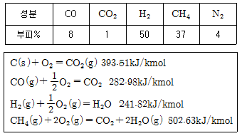
- 444
- 1327
- 19666
- 44⑤2
(정답률: 51%)
9. 석탄을 공업분석하여 휘발분 33.1%, 회분 14.8%, 수분 5.7%의 결과를 얻었다. 이석탄의 연료비는?
- 1.4
- 3.1
- 8.1
- 46.4
(정답률: 49%)
10. 298.15K, 0.1MPa 상태의 일산화탄소를 같은 온도의 이론공기량으로 정상유동과정으로 연소시킬 때 생성물의 단열화염 온도를 주어진 표를 이용하여 구하면 약 몇 K 인 가? (단, 이 조건에서 CO 및 CO2 의 생성엔탈피는 각각 -11⑤29kJ/kmol , -393522kJ/kmol 이다.)
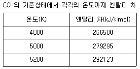
- 4835
- 5⑤8
- 5194
- 5306
(정답률: 48%)
11. 고체연료를 사용하는 어떤 열기관의 출력이 3000kW이고 연료소비율이 매시간 1400kg일 때 이 열기관의 열효율은 약 몇 % 인가? (단, 이 고체연료의 저위발열량은 28MJ/kg 이다.)
- 28
- 38
- 48
- 58
(정답률: 50%)
12. 미분탄연소의 일반적인 특징에 대한 설명 중 틀린 것은?
- 사용연료의 범위가 좁다.
- 소량의 과잉공기로 단시간에 완전연소가 되므로 연소효율이 높다.
- 부하변동에 대한 적응성이 좋다.
- 회(灰), 먼지 등이 많이 발생하여 집진장치가 필요하다.
(정답률: 68%)
13. 여과집진장치의 효율을 높이기 위한 조건이 아닌 것은?
- 처리가스의 온도는 250℃를 넘지 않도록 한다.
- 고온가스를 냉각할 때는 산노점 이하를 유지하여야 한다.
- 미세입자포집을 위해서는 겉보기여과속도가 작아야 한다.
- 높은 집진율을 얻기 위해서는 간헐식 털어내기 방식을 선택한다.
(정답률: 77%)
14. 탄소(C) 86%, 수소(H2) 12%, 황(S) 2% 의 조성을 갖는 중유 100kg을 표준상태(0℃, 101.325kPa)에서 완전연소시킬 때 C는 CO2가 되고, H 는 H2O 가 되며, S는 SO2가 되었다고 하면 압력 101.325kPa, 온도 590K에서 연소가스의 체적은 약 몇 m3 인가?
- 600
- 620
- 640
- 660
(정답률: 23%)
15. 메탄(CH4)의 완전연소시 단위부피(Nm3)당 이론공기량(Nm3)은?
- 7.17
- 9.52
- 11.0
- 12.5
(정답률: 69%)
16. 연소가스가 30℃, 101.325kPa에서 조성이 부피 % 로 CO2 30%, CO 5%, O2 10%, N2 55% 로 되어 있다. 이것을 무게% 로 환산하면 CO2 는 약 몇 % 인가?(오류 신고가 접수된 문제입니다. 반드시 정답과 해설을 확인하시기 바랍니다.)
- 20
- 30
- 40
- 50
(정답률: 36%)
17. 다음 연소범위에 대한 설명 중 틀린 것은?
- 연소 가능한 상한치와 하한치의 값을 가지고 있다.
- 연소에 필요한 혼합 가스의 농도를 말한다.
- 연소 범위가 좁으면 좁을수록 위험하다.
- 연소 범위의 한한치가 낮을수록 위험도는 크다.
(정답률: 81%)
18. 강재 가열로 열정산 시 출열에 해당하지 않은 것은?
- 연소배가스중 수증기의 보유열
- 스케일의 현열
- 스케일의 생성열
- 방사 열손실
(정답률: 43%)
19. 저탄장에서 석탄의 자연발화를 막기 위하여 탄층 내부온도는 최대 몇 ℃ 이하로 유지하여야 하는가?
- 30
- 60
- 90
- 120
(정답률: 71%)
20. 다음 기체연료 중 고발열량(kcal/Nm3)이 가장 큰 것은?
- 고로가스
- 수성가스
- 도시가스
- 액화석유가스
(정답률: 83%)
2과목: 열역학
21. 다음 중 교축(throttling)과정을 통화여 일반적으로 변화하지 않는 물성치는?
- 온도
- 압력
- 엔탈피
- 엔트로피
(정답률: 80%)
22. 피스톤이 설치된 실린더에 압력 0.3MPa, 체적 0.8m3인 습증기 4kg 이 들어있다. 압력이 일정한 상태에서 가열하여 체적이 1.6m3 이 되었을 때 습증기의 건도는 얼마인가?(단, 0.3MPa에서 포화액 비체적은 0.001m3/kg, 건포화증기 비체적은 0.60m3/kg 이다.)
- 0.334
- 0.425
- 0.575
- 0.666
(정답률: 27%)
23. 냉동기가 저온에서 80kcal 를 흡수하고 고온에서 120kcal 를 방출할 때 성능계수(COP)는 얼마인가?
- 0
- 1
- 2
- 3
(정답률: 69%)
24. 다음 중 에너지 보존의 법칙은 어느 것인가?
- 열역학 제0법칙
- 열역학 제1법칙
- 열역학 제2법칙
- 열역학 제3법칙
(정답률: 85%)
25. 다음과 같은 Van der Waals식에서 상수 a, b를 구할때 어떠한 임계점 관계식을 사용하는가?(오류 신고가 접수된 문제입니다. 반드시 정답과 해설을 확인하시기 바랍니다.)
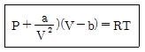
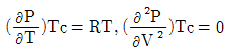
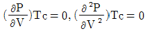
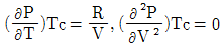
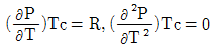
(정답률: 48%)
26. 1.5MPa, 250℃의 공기 5kg이 PV1.3 값이 일정한 과정에 따라 팽창비가 5가 될 때까지 팽창하였다. 이 때내부에너지의 변화는 약 몇 kJ 인가?(단, 공기의 정적비열은 0.72kJ/kg・K 이다.)
- -1002
- -721
- -144
- -72
(정답률: 54%)
27. 온도가 400℃ 인 고온열원과 300℃ 인 저온열원 사이에서 작동하는 카르노 열기관이 있다. 이 열기관에서 방출되는 열은 또 다른 카르노 열기관으로 공급되고, 이 열기관은 300℃ 의 고온열원과 200℃ 인 저온열원 사이에서 작동한다. 이와 같은 복합 카르노 열기관의 효율은 어떻게 계산되는가?
- 200/673
- 573/673
- 473/673
- 473/573
(정답률: 40%)
28. 밀폐계의 등온과정에서 이상기체가 행한 단위 질량당 일은?(단, 압력 P, 부피 V 는 1 에서 2 로 변하며 R 은 기체상수, T 는 절대온도이다.)
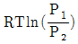
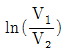
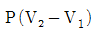
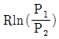
(정답률: 63%)
29. 어떤 기체가 피스톤 고정장치에 의해 실린더 내부에 밀폐 되어 있다. 초기 기체의 상태는 절대압력 700kPa, 부피 20ℓ 이며 실린더 외부는 완전 진공이다. 피스톤 고정장치를 갑자기 이완시켜 기체 용적이 2배가 될 때 다시 피스톤을 고정시킨다면 이 계의 내부에너지 변화량은 몇 kJ 인가? (단, 이 계는 단열 되어 있으며 마찰은1 71℃ 물 100kPa, 1⑤℃ 수증기 h(kJ/kg) 297 2680 무시한다.)
- 1400
- 700
- 350
- 0
(정답률: 38%)
30. 브레이튼(Brayton) 사이클은 어떤 기관의 사이클인가?
- 가스터빈 기관
- 증기기관
- 가솔린 기관
- 디젤기관
(정답률: 77%)
31. 다음 중 가스의 액화과정과 가장 관계가 먼 것은?
- 압축과정
- 등압냉각과정
- 최종상태는 압축액 또는 포화혼합물 상태이다.
- 등온팽창과정
(정답률: 70%)
32. 다음은 물의 압력-온도 선도를 나타낸다. 고체가 녹아 액체로 되는 상태를 가장 잘 나타내는 점 또는 선은?
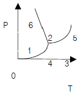
- 점 4
- 선 4-6
- 점 5
- 선 4-5
(정답률: 58%)
33. 비열이 0.473kJ/kg・K 인 10kg 의 철을 온도 20℃에서 100℃ 까지 높이는데 필요한 열량은 몇 kJ 인가?
- 38
- 80
- 378
- 800
(정답률: 63%)
34. 재생사이클의 장점과 거리가 먼 것은?(오류 신고가 접수된 문제입니다. 반드시 정답과 해설을 확인하시기 바랍니다.)
- 공기예열기(air pre-heater)가 필요 없다.
- 추기에 의하여 보일러급수를 예열하므로 보일러에서 가열량을 감소시킨다.
- 터빈 저압부가 과대해지는 것을 막을 수 있다.
- 랭킨사이클에 비해 효율이 증가한다.
(정답률: 48%)
35. 이상적인 가역 단열변화에서 엔트로피는 어떻게 되는가?
- 감소
- 증가
- 불변
- 일정하지 않음
(정답률: 52%)
36. 노즐에서 가역단열 팽창하여 분출하는 이상기체에 대한 유속의 계산식은 어떻게 표시되는가?(단, 노즐입구에서의 유속은 무시하고, 입, 출구에서의 엔탈피(kJ/kg)는 각각 i0, i1 이다.
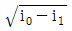
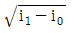
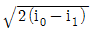
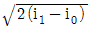
(정답률: 61%)
37. 외부에서 가열되는 수평코일 속을 물이 흐르고 있다. 입구의 압력과 온도가 2MPa, 71℃ 이고 출국에서는 100kPa, 1⑤℃ 라면 물 1kg 당 코일에 가하여진 열량은 몇 kJ 인가? (단, 입구속도는 0.1524m/s 이고 출구속도는 5.24m/s이며 산정 소요표는 다음과 같다.)
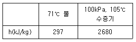
- 297
- 2383
- 2680
- 2997
(정답률: 48%)
38. 다음 중 랭킨(Rankin) 사이클과 관계되는 것은?
- 가스터빈
- 증기 원동소
- Carnot 열기관
- 가솔린 기관
(정답률: 63%)
39. 압력 1MPa, 온도 210℃ 인 증기는 어떤 상태의 증기인가? (단, 1MPa 에서의 포화온도는 179℃ 이다.)
- 과열증기
- 포화증기
- 건포화증기
- 습증기
(정답률: 69%)
40. 50℃ 의 물의 포화액체와 포화증기의 엔트로피는 각각 0.703kJ/kg・K, 8.07kJ/kg・K 이다. 50℃ 의 습증기의 엔트로피가 5.02kJ/kg・K 일 때 습증기의 건도는 몇 %인가?
- 65.8
- 62.5
- 58.6
- 53.4
(정답률: 51%)
3과목: 계측방법
41. 면적식 유량계의 특징에 대한 설명 중 틀린 것은?
- 측정치가 균등 눈금으로 얻어진다.
- 고점도 유체의 측정이 가능하다.
- 적은 유량도 측정이 가능하다.
- 정도는 ±0.01% 정도로 아주 좋다.
(정답률: 65%)
42. 다음 중 연소기체의 분석에 가장 적합한 기기는?
- 핵자기공명(NMR)
- 전자스핀공명(ESR)
- 기체크로마토그래피(Gas chromatography)
- 질량분석기(Mass spectroscopy)
(정답률: 79%)
43. 열전대의 냉접점의 온도는 어느 온도를 유지해야 하는가?
- 0℃
- 18℃
- 25℃
- 32℃
(정답률: 74%)
44. 알코올 온도계의 일반적인 특징에 대한 설명으로 틀린 것은?
- 저온측정에 적합하다.
- 표면장력이 커서 모세관 현상이 작다.
- 열팽창계수가 크다.
- 액주가 상승 후 하강하는데 시간이 많이 걸린다.
(정답률: 57%)
45. 다음 가스 분석법 중 흡수식인 것은?
- 오르자트법
- 밀도법
- 자기법
- 음향법
(정답률: 67%)
46. 가스의 상자성(常磁性)을 이용하여 만든 세라믹식 가스 분석계는?
- 가스크로마토그래피
- O2 가스계
- CO2 가스계
- SO2 가스계
(정답률: 64%)
47. 대칭성 2원자분자를 제외한 CO, CH 등 거의 대부분가스를 분석할 수 있으며, 선택성이 우수하고 연속적분석이 가능한 가스 분석법은?
- 적외선법
- 음향법
- 열전도율법
- 도전율법
(정답률: 68%)
48. 출력측의 선호를 입력측에 되돌려 비교하는 제어방법은?
- 인터록(Inter lock)
- 시퀀스(Sequence)
- 피드백(Feed back)
- 리셋(Reset)
(정답률: 82%)
49. 다음 중 미압 측정용으로 가장 적절한 압력계는?
- 부르돈관 압력계
- 경사관식 액주형 압력계
- U자관 압력계
- 전기식 압력계
(정답률: 75%)
50. 다음 액주계에서 r, r1 이 비중을 표시할 때 압력(Px)을 구하는 식은?
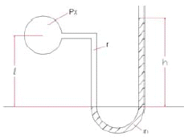
- Px = r1h + r1ℓ
- Px = r1h - rℓ
- Px = r1ℓ - rh
- Px = r1ℓ + rh
(정답률: 56%)
51. 2요소식(二要素式)의 수위제어에 대한 설명으로 옳은 것은?
- 수위 쪽에 증기압력을 검출하여 급수량을 조절하는 방식이다.
- 수위의 역응답을 제거하기 위하여 사용하는 방식이다.
- 구성이 단요소식(單要素式)에 비해 복잡하므로 자력(自力)제어는 불가능 하다.
- 부하(負荷)가 변동할 때 수위가 변화하여 급수량이 조절 되는 것으로 부하변동에 의한 수위의 변화폭이 적다.
(정답률: 65%)
52. 제백(Seebeck)효과에 대하여 가장 바르게 설명한 것은?
- 어떤 결정체를 압축하면 기전력이 일어난다.
- 성질이 다른 두 금속의 접점에 온도차를 두면 열기전력이 일어난다.
- 고온체로부터 모든 파장의 전방사에너지는 절대온도의 4승에 비례하여 커진다.
- 고체가 고온이 되면 단파장 성분이 많아진다.
(정답률: 72%)
53. 전자 유량계의 특징에 대한 설명으로 가장 거리가 먼 것은?
- 도전성 유체에 한하여 사용한다.
- 압력손실은 거의 없다.
- 점도가 높은 유체는 사용하기 곤란하다.
- 응답이 매우 빠르다.
(정답률: 74%)
54. 열전대온도계에서 보상도선(補償導線)의 구비조건에 대한 설명으로 틀린 것은?
- 일반용은 비닐로 피복한 것으로 침수시에도 절연이 저하 되지 않을 것
- 내열용은 글라스 울(grass wool)로 절연되어 있을 것
- 절연은 500V 직류전압하에서 3~10MΩ 정도일 것
- 외부의 온도변화를 신속하게 열전대에 전달할 수 있을것
(정답률: 52%)
55. 1500K의 완전방사체 표면으로부터 방출되는 전방사에너지는 약 몇 W/cm2 인가? (단, 스테판-볼쯔만상수는5.67×10-12W/cm2・K4이다.)
- 26.7
- 28.7
- 30.7
- 32.7
(정답률: 48%)
56. 유체의 와류에 의해 측정하는 유량계는?
- 오벌(Oval) 유량계
- 델타(Delta) 유량계
- 로타리 피스톤(Rotary Piston) 유량계
- 로터미터(Rotameter)
(정답률: 54%)
57. 다음 제어방식 중 잔류편차(Off set)를 제거하고 응답시간이 가장 빠르며 진동이 제거되는 제어방식은?
- P
- PI
- I
- PID
(정답률: 70%)
58. 대기압 750mmHg에서 계기압력이 3.25kg/cm2이었다. 이 때의 절대압력은?
- 2.23kg/cm2
- 3.27kg/cm2
- 4.27kg/cm2
- 5kg/cm2
(정답률: 63%)
59. 세라믹(Ceramic)식 O 계의 세라믹 주원료는?
- Cr2O3
- Pb
- P2O5
- ZrO2
(정답률: 72%)
60. 비례-적분 제어동작에서 적분동작은 비례동작을 사용했을 때 발생하는 어떤 문제점을 제거하기 위한 것인가?
- 오프셋(Off-set)
- 빠른응답(quick response)
- 지연(delay)
- 외란(disturbance)
(정답률: 72%)
4과목: 열설비재료 및 관계법규
61. 빈규석질 내화물의 특징에 대한 설명으로 옳은 것은?
- 염기성 내화물이다.
- 열에 의한 치수변동이 작다.
- 저온에서 강도가 작다.
- MgO, ZnO 를 50~80% 함유한다.
(정답률: 52%)
62. 보온재나 단열재 및 보냉재 등으로 구분하는 기준은?
- 열전도율
- 안전사용온도
- 압력
- 내화도
(정답률: 76%)
63. 85℃의 물 120kg의 온탕에 10℃의 물 140kg을 혼합하면 약 몇 ℃의 물이 되는가?
- 44.6
- 56.6
- 66.9
- 70.0
(정답률: 57%)
64. 지식경제부장관은 에너지를 합리적으로 이용하게 하기 위하여 몇 년 마다 에너지이용합리화에 관한 기본계획을 수립하여야 하는가?
- 2년
- 3년
- 4년
- 5년
(정답률: 55%)
65. 크롬벽돌이나 크르-마그벽돌돌이 고온에서 산화철을 흡수하여 표면이 부풀어 오르고 떨어져 나가는 현상은?
- 버스팅
- 큐어링
- 슬래킹
- 스폴링
(정답률: 75%)
66. 다음 중 보온층의 경제적 두께 결정에 영향을 크게 미치지 않은 것은?
- 연료비
- 시공비
- 예비비
- 상각(償却)비
(정답률: 48%)
67. 지식경제부령으로 정하는 광고매체를 이용하여 효율관리 기자재의 광고를 하는 경우에 그 광고의 내용에 에너지소비효율등급 또는 에너지소비효율을 포함하도록 하여야 할 자가 아닌 것은?
- 효율관리기자재의 제조업자
- 효율관리기자재의 수입업자
- 효율관리기자재의 판매업자
- 효율관리기자재의 수리업자
(정답률: 77%)
68. 지식경제부장관은 국내외 에너지 사정의 변동으로 에너지수급에 중대한 차질이 발생할 우려가 있다고 인정되면 필요한 범위에서 에너지사용자, 공급자 또는 에너지 사용 기자재의 소유자와 관리자 등에게 조정・명령 그 밖에 필요한 조치를 할 수 있다. 이에 해당되지 않는 항목은?
- 에너지의 개발
- 지역별 에너지 할당
- 에너지의 비축
- 에너지의 배급
(정답률: 66%)
69. 견요(堅窯)의 특징에 대한 설명으로 틀린 것은?
- 석회석 클린커 제조에 널리 사용된다.
- 하부에서 연료를 장입하는 형식이다.
- 제품의 예열을 이용하여 연소용 공기를 예열한다.
- 이동화상식이며 연속요에 속한다.
(정답률: 63%)
70. 피가연물이 연소가스의 더러움을 받지 않는 가마는?
- 직화식 가마(直火式 kiln)
- 반머플 가마(伴 muffle kiln)
- 머플 가마(muffle kiln)
- 직접식 가마(直接式 kiln)
(정답률: 77%)
71. 단가마는 어떠한 형식의 가마인가?
- 불연속식
- 반연속식
- 연속식
- 불연속식과 연속식의 절충형식
(정답률: 70%)
72. 탄화규소(SiC)질 내화물에 대한 설명으로 옳지 않은 것은?
- 내화도, 하중연화온도가 높다.
- 구조적 스폴링을 일으키기 쉽다.
- 열전도율이 크다.
- 고온에서 산화되기 쉽다.
(정답률: 56%)
73. 지식경제부령에서 정한 평균에너지소비효율 산출식은?
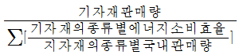
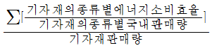
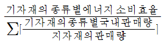
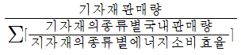
(정답률: 55%)
74. 에너지사용계획을 수립하여 지식경제부장관과 협의를 하여야 하는 사업이 아닌 것은?
- 도시개발사업
- 항만건설사업
- 관광단지개발사업
- 박람회 조경사업
(정답률: 78%)
75. 폴리스틸렌폼의 최고 안전 사용온도는?
- 130℃
- 100℃
- 70℃
- 50℃
(정답률: 49%)
76. 보온재의 구비조건으로 가장 거리가 먼 것은?
- 밀도가 작을 것
- 열전도율이 작을 것
- 재료가 부드러울 것
- 내열, 내약품성이 있을 것
(정답률: 68%)
77. 유체의 역류를 방지하여 한쪽 방향으로만 흐르게 하는 것으로 리프트식과 스윙식으로 대별되는 밸브는?
- 회전밸브
- 슬루우스밸브
- 체크밸브
- 앵글밸브
(정답률: 84%)
78. 지식경제부장관이 고시하는 인력을 갖춘 경우 에너지 사용계획 수립대행기관으로 지정 받을 수 있는 자는?
- 정부투자기관
- 정부출연기관
- 대학부설 환경관계 연구소
- 기술사법에 의하여 기술사사무소의 개설등록을 한기술사
(정답률: 75%)
79. 터널가마(Tunnel kiln)의 특징에 대한 설명 중 틀린 것은?
- 연속식 가마이다.
- 사용연료에 제한이 없다.
- 대량생산이 가능하고 유지비가 저렴하다.
- 노내 온도조절이 용이하다.
(정답률: 56%)
80. 에너지이용합리화법상 에너지관리공단의 설립목적은?
- 에너지이용합리화 사업을 효율적으로 추진하기 위하여
- 에너지 전화사업을 추진하기 위하여
- 에너지 절약형 기자재의 도입을 위하여
- 에너지이용합리화를 위한 기술・지도를 위하여
(정답률: 71%)
5과목: 열설비설계
81. 건조기의 열효율 표시를 옳게 나타낸 것은? (단, Q : 입열량, q1 : 수분 증발에 소비된 열량, q2 : 재료 가열에 소비된 열량, q3 : 건조기의 손실 열량을 나타낸다.)
- q1/Q
- q2/Q
- q1+q2/Q
- q1+q2+q3/Q
(정답률: 61%)
82. 평형노통과 비교한 파형노통의 장점이 아닌 것은?
- 청소 및 검사가 용이하다.
- 고열에 의한 신축과 팽창이 용이하다.
- 전열면적이 크다.
- 외압에 대한 강도가 크다.
(정답률: 72%)
83. 외부 공기온도 300℃의 평면벽에 열전도율이 0.03kcal/m・h・℃인 보온재가 두께 50mm로 시공되어있다. 평면벽으로부터 외부 공기로의 배출 열량은 약 몇 kcal/m2・h 인가? (단, 공기 온도는 20℃, 보온재 표면과 공기와의 열전달 계수는 8kcal/m2・h・℃이다.)
- 83
- 89
- 156
- 502
(정답률: 38%)
84. 내화벽의 열전도율이 0.9kcal/m・h・℃인 재질로 된 평면벽의 양측 온도가 800℃와 100℃이다. 이 벽을 통한 단위면적당 열전달량이 1400kcal/m2・h일 때 벽 두께는 약 몇 cm 인가?
- 25
- 35
- 45
- 55
(정답률: 49%)
85. 해수 마그네시아 침전 반응을 바르게 나타낸 식은?
- 3MgO・2SiO2・2H2O+3CO2 → 3MgCO3+2.5O2+2H2O
- CaCO3+MgCO3 → CaMg(CO3)2
- CaMg(CO3)2+MgCO3+CaCO3
- MgCO3+Ca(OH)2 → Mg(OH)2 + CaCO3
(정답률: 64%)
86. 노통식 보일러에서 파형부의 길이가 230mm 미만인 파형 노통의 최소두께(t)를 결정하는 식은? (단, P는 최고 사용압력(MPa), D는 노통의 파형부에서의 최대내경과 최소 내경의 평균치(mm), C는 노통의 종류에 따른 상수이다.)
- 10PD
- 10P/D
- C/10PD
- 10PD/C
(정답률: 66%)
87. 보일러에서 발생하는 저온부식의 방지방법이 아닌 것은?
- 연료 중의 황성분을 제거한다.
- 배기가스의 온도를 노점온도 이하로 유지한다.
- 과잉공기를 적거하여 배기가스 중의 산소를 감소 시킨다.
- 저온의 전열면 표면에 내식재료를 사용한다.
(정답률: 73%)
88. Shell & Tube 열교환기에 대한 설명으로 틀린 것은?
- 현장제작이 가능하여 좁은 공간에 설치가 가능하다.
- 플레이트 열교환기에 비해서 열통과율이 낮다.
- Shell과 Tube 내의 흐름은 직류보다 향류흐름의 성능이 더 우수하다.
- 구조상 고온・고압에 견딜 수 있어 석유화학공업 분야 등에서 많이 이용된다.
(정답률: 70%)
89. 안전밸브의 작동시험에 대한 설명 중 틀린 것은?
- 안전밸브의 분출압력은 1개일 경우 최고사용압력 이하이어야 한다.
- 과열기와 안전밸브 분출압력은 증발부 안전밸브의 분출 압력 이하이어야 한다.
- 발전용 보일러 부착하는 안전밸브의 분출정지압력은 최고사용압력 이하이어야 한다.
- 재열기 및 독립과열기에 있어서는 안전밸브가 하나인 경우 최고사용압력 이하이어야 한다.
(정답률: 43%)
90. 접근되어 있는 평행한 2맨의 보일러판의 보강에 주로 사용하는 버팀은?
- 시렁버팀
- 관버팀
- 경사버팀
- 나사버팀
(정답률: 57%)
91. 보일러 방출관의 크기는 전열면적에 따라 정할 수 있다. 전열면적 20m2 이상인 방출관의 안지름은 몇 mm 이상이어야 하는가?
- 25
- 30
- 40
- 50
(정답률: 56%)
92. 연관의 바깥지름이 75mm인 연관보일러 관판의 최소두께는 얼마 이상이어야 하는가?
- 8.5mm
- 9.5mm
- 12.5mm
- 13.5mm
(정답률: 67%)
93. 연소 가스의 성분 중 절탄기의 전열면을 부식시키는 성분은?
- 질소산화물(NO2)
- 탄소산화물(CO2)
- 황산화물(SO2)
- 질소(N2)
(정답률: 61%)
94. 열매체보일러의 특징에 대한 설명으로 틀린 것은?
- 저압으로 고온의 증기를 얻을 수 있다.
- 겨울철에도 동결의 우려가 적다.
- 물이나 스팀보다 전열특성이 좋으며, 사용온도한계가 일정하다.
- 다우삼, 모빌섬, 카네크롤보일러등이 이에 해당한다.
(정답률: 59%)
95. 프라이밍(priming) 및 포밍(foaming)의 발생 원인이 아닌 것은?
- 보일러를 고수위로 운전할 때
- 증기부하가 적고 증발수면이 넓을 때
- 주증기변을 급히 열었을 때
- 보일러수에 불순물, 유지분이 많이 포함되어 있을 때
(정답률: 69%)
96. 수관식 보일러의 특징에 대한 설명 중 틀린 것은?
- 고압, 대용량의 보일러 제작이 가능하다.
- 연소실의 크기 및 형태를 자유롭게 설계할 수 있다.
- 전열면에 비해 관수보유량이 많아 중기수요에 따른 압력의 변동이 적다.
- 관수의 순환이 좋아 열응력을 일으킬 염려가 적다.
(정답률: 43%)
97. 열교환기에 입구와 출구의 온도차가 각각 △θ′, △θ ′′일 때 대수평균 온도차(△θm)의 식은? (단, △θ′＞ △θ′′ 이다.)
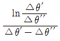
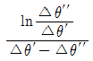
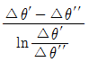
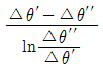
(정답률: 63%)
98. 급수펌프인 인젠턱의 특징에 대한 설명으로 틀린 것은?
- 구조가 간단하여 소형에 사용된다.
- 별도의 소요동력이 필요하지 않다.
- 송수량의 조절이 용이하다.
- 소량의 고압증기로 다량을 급수할 수 있다.
(정답률: 52%)
99. 다음 중 복사과열기에 대한 설명으로 틀린 것은?
- 고온 고압 보일러에서 접촉 과열기와 조합하여 사용한다.
- 연소실 내의 전열면적의 부족을 보충한다.
- 과열온도의 변동을 적게 하기 위하여 사용한다.
- 포화증기의 온도를 일정하게 유지하면서 압력을 높이는 장치이다.
(정답률: 49%)
100. “어떤 주어진 온도에서 최대복사강도에서의 파장 λmax 는 절대온도에 반비례한다”는 법칙은?
- Wien 의 법칙
- Planck 의 법칙
- Fourier 의 법칙
- Stefan-Boltzmann 의 법칙
(정답률: 63%)